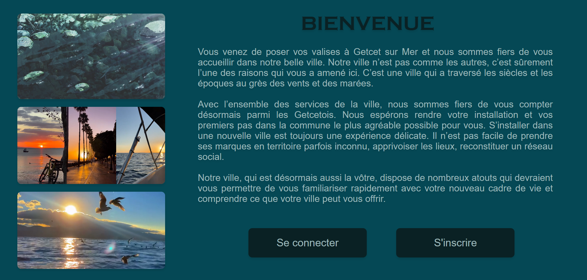
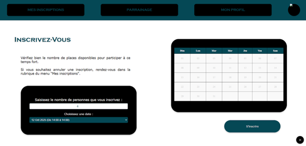
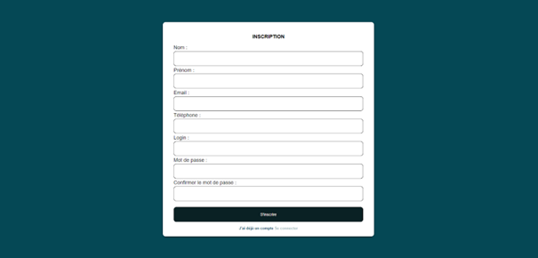

Description du projet
Le but de cette application web est de permettre aux nouveaux habitants d'une ville fictive "Getcet sur mer" de s'intégrer à la ville à travers des activités proposées par la mairie.
Sur ce site, les rôles "arrivants" et "mairie" ont la possibilité d'itéragir.
D'un coté, les arrivants peuvent :
- S'inscrire à des temps forts (ou activités)
- Modifier leur profil
- Créer un compléter
Quant à la mairie, elle peut :
- Gérer des temps fort (Créer, modifier, supprimer)
- Consulter les statistiques
- Consulter la liste des inscrits
D'un coté, les arrivants peuvent :
- S'inscrire à des temps forts (ou activités)
- Modifier leur profil
- Créer un compléter
Quant à la mairie, elle peut :
- Gérer des temps fort (Créer, modifier, supprimer)
- Consulter les statistiques
- Consulter la liste des inscrits
Bilan et autocritique
La prise en main de CodeIgniter 4 s'est fait facilement de mon côté. L'appel des fonctions du modèle, l'usage des routes ont facilité et accéléré le codage de l'alication web.